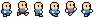

Tutorial:Animation
Before we begin. This is a tutorial for semi advanced users. You are expected to know about tables, loops and the basics of drawing in Löve2D. And of course how to run a Löve2D game.
Alright. Let's get to it shall we?
I'm going to cover the basics of sprite based animation. This means you have a series of images which are displayed one after another. If you intent to create your own spritesheet make sure to leave at least 1px of pure transparency between the individual sprites. Otherwise you might see artifacts from the next or previous image and nobody wants that!
Loading animations
For this tutorial we'll be using a unnamed old hero. Generously made available for everyone by GrafxKid on OpenGameArt.org. Download the image below and place it next to your main.lua in the folder.


To be able to create multiple animations we want a reusable function that provides us with a table that we can use for everything related to the animation. We start this by defining a new function, storing our image in a variable and creating a new local table (the return value will be our table. We don't want some random animation table be globally defined or worse yet overwrite other data!)
The following parameters are going to be needed:
- image
An image object created with love.graphics.newImage(filepath)
- width
The width of each individual sprite. We are going to assume all sprites have the same size.
- height
The height of each individual sprite.
- duration
How long the animation takes before it loops back to the first frame.
function newAnimation(image, width, height, duration)
local animation = {}
animation.spriteSheet = image;
return animation
end
You can try to just draw this directly with love.graphics.draw(animation.spriteSheet). However. Then we'd just have all the images drawn next to each other. Certainly not what we want. Which is where Quads come in very handy!
They define a part of the image which will be drawn instead of the whole image. Exactly what we need!
Now we could define each quad individually. But that's going to be very annoying if we have several animations and hundreds of sprites! So instead we will load it within a loop that detects how many sprites are within an image. For this setup there must not be empty spaces and the image must contain exactly one animation.
function newAnimation(image, width, height, duration)
local animation = {}
animation.spriteSheet = image;
animation.quads = {};
for y = 0, image:getHeight() - height, height do
for x = 0, image:getWidth() - width, width do
table.insert(animation.quads, love.graphics.newQuad(x, y, width, height, image:getDimensions()))
end
end
return animation
end
The 3 parameters to the for loop mean the following:
1. The starting value for y or x.
2. The maximum value (in this case the total width or height of the reference image)
3. How much should be added per step. In our case the size of the sprite.
With this we get the location on the sprite sheet from y and x!
You might wonder why we do "image:getHeight() - height" instead of just testing against the height of the image. This is because we want to make sure another sprite still fits on the sprite sheet. The sheet itself might not have the exact size we want it to. If it were one pixel too large. We do not want to add another quad (which would render as nothing) but instead ignore it.
Now we have 6 Quads ranging from index 1 - 6 in the table. Awesome!
But we have the issue that we have essentially 6 images that we can draw individually. But we need to draw them one after another over time. Also we don't just want to play this animation. We might want to change the speed at which it plays.
To cover this we add two more variables to our animation table. Duration (which we expect as parameter) and currentTime which is used to measure how much time has passed.
function newAnimation(image, width, height, duration)
local animation = {}
animation.spriteSheet = image;
animation.quads = {};
for y = 0, image:getHeight() - height, height do
for x = 0, image:getWidth() - width, width do
table.insert(animation.quads, love.graphics.newQuad(x, y, width, height, image:getDimensions()))
end
end
animation.duration = duration or 1
animation.currentTime = 0
return animation
end
Which concludes our animation creation function already!
Updating the animation
Next up we need to load our animation table (call our newly created function) and update our current time.
function love.load()
animation = newAnimation(love.graphics.newImage("oldHero.png"), 16, 18, 1)
end
function love.update(dt)
animation.currentTime = animation.currentTime + dt
if animation.currentTime >= animation.duration then
animation.currentTime = animation.currentTime - animation.duration
end
end
The demo sprite sheet has a sprite size of 16 pixels wide and 18 pixels high. We intent to play all images over the course of 1 second.
In love.update we simply add dt (delta time aka the time since the last frame) to our current time. We now count upwards continuously!
But we will use the current time to determine which frame should be shown. As such we will want it to be between 0 and the value of "duration". The if simply checks if "currentTime" is more than "duration" in which case we subtract "duration". You could just set "currentTime" to 0 instead of subtracting "duration". However this will result in fractions of a second being lost every time the animation finishes and therefore slow down the animation playtime ever so slightly. Which can easily be avoided and should be avoided!
Now for the really interesting part!
Drawing the animation
How do we draw this?
Well. We have the duration and current time. With this info we can calculate a percentage! How much of the animation has passed so far?
If you've followed this tutorial correctly so far "currentTime / duration" will provide you with a number between 0 and 1. Which represents the percentage. 0.25 means 25% of the animation has passed.
Considering this we can search for the correct image to use! Since we already have a number between 0 and 1 we can simply multiply this percentage with our total amount of images and get a number between 0 and 6!
currentTime / duration * #quads
However. If we try to get this from our table we will run into the issue that this is not a whole number. But our images are stored with whole numbers! So attempting to get the image at index "4.75" will give us nothing. Bummer!
Fear not. The solution is not too difficult.
"currentTime" will be a number between 0 and just below "duration" (because we reduce "currentTime" if it is larger or equal "duration"). Which would result in a number between 0 and 5.
To transform this value from our decimal point value to a whole number between 1 and 6 we do the following:
math.floor(currentTime / duration * #quads) + 1
"math.floor" provides us with the next lower number. Which means in our case a number between 0 and 5. We add one pushing it to a number between 1 and 6. All the sprites we have!
Lövely!
Alright. So all that's left is to draw the appropriate quad!
This simply requires us to provide love.graphics.draw with the image reference (our spriteSheet) and the quad we want to use. Simple enough!
local spriteNum = math.floor(animation.currentTime / animation.duration * #animation.quads) + 1
love.graphics.draw(animation.spriteSheet, animation.quads[spriteNum])
And we are done! You should have a walking dude in the top left corner of your window when you execute this code!
You can change where and how it is drawn by providing more parameters to the draw function.
Disclaimer: This code is not game ready! It is meant to explain the basic logic behind animations. If you are searching for game ready code take a look at the list of Libraries available!
Task
To improve this code. Try to rewrite the update and draw function to be able to handle multiple animations.
You can load the same animation multiple times and store them in a special table to get started right away!
As hint as to how it could be done: You could put the drawing logic in the animation table as well. And build it so you can call "animation:draw(x, y, r, sx, sy, [...])" to draw it on the screen.
Good luck and have fun!
Full Sourcecode
function love.load()
animation = newAnimation(love.graphics.newImage("oldHero.png"), 16, 18, 1)
end
function love.update(dt)
animation.currentTime = animation.currentTime + dt
if animation.currentTime >= animation.duration then
animation.currentTime = animation.currentTime - animation.duration
end
end
function love.draw()
local spriteNum = math.floor(animation.currentTime / animation.duration * #animation.quads) + 1
love.graphics.draw(animation.spriteSheet, animation.quads[spriteNum], 0, 0, 0, 4)
end
function newAnimation(image, width, height, duration)
local animation = {}
animation.spriteSheet = image;
animation.quads = {};
for y = 0, image:getHeight() - height, height do
for x = 0, image:getWidth() - width, width do
table.insert(animation.quads, love.graphics.newQuad(x, y, width, height, image:getDimensions()))
end
end
animation.duration = duration or 1
animation.currentTime = 0
return animation
end
Other Languages
English
More info